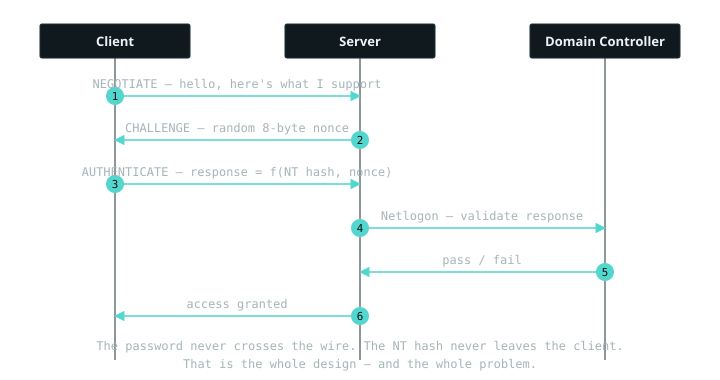

24 March 2026 · infra
NTLM authentication, and why it keeps coming back to bite you
Early in my career I kept running Responder, watching a "hash" scroll past, and quietly misunderstanding what I was looking at. I assumed I'd caught the password's hash and that a good wordlist would turn it into a password. Sometimes that worked. Often it didn't, and I couldn't have told you why. The gap was small but it changed everything: with NTLM, what you capture decides what you can do with it, and the two things people casually call "the hash" are not the same object.
The handshake
Start with the shape of it. NTLM is challenge-response. The client says hello, the server sends a random number, the client proves it knows the secret by doing math over that number, and the server checks the answer with a domain controller. The password never crosses the wire and the stored secret never leaves the client. That is the whole design.

So if the password never travels, what does Responder actually catch? Not the password, and not the stored hash either — it catches step three, the client's answer to the challenge. That one distinction is most of this post.
NT and LM — two hashes, and why both exist
Before we get to the answer, there's the stored secret it's derived from. Windows historically kept two of them per account, and you still meet both names, so it's worth being clear on which is which.
The LM hash is the old one, from LAN Manager in the DOS era, and it's almost comically weak. It uppercases your password, splits it into two seven-character halves, and DES-encrypts a constant with each half independently. Two short halves means a tiny keyspace, and the uppercasing throws away half your character set before you even start. Rainbow tables shred it.
The NT hash replaced it. It's
MD4(UTF-16LE(password)) — the whole password, case preserved,
no splitting. MD4 is ancient and the hash is unsalted, so it isn't
cryptographically impressive, but it isn't broken the way LM is either. Its
strength rides entirely on the password behind it. Modern Windows stores
the NT hash and leaves the LM field blank, which is why a dumped account
today usually looks like this:
Administrator:500:aad3b435b51404eeaad3b435b51404ee:9fc864c0eea4760e3d634d43755ba1b7:::
|________________________________| |________________________________|
empty LM NT hash
That first blob looks like a hash — is it an LM hash? It's the empty
LM value. aad3b435b51404eeaad3b435b51404ee is the well-known
hash of a blank LM password; seeing it just means LM storage is disabled,
which is the state you want. The NT hash is the second blob, and that's the
one that matters.
What you actually capture on the wire
Here's the idea that took me longest. When Responder captures a "hash," it isn't grabbing the NT hash. It's grabbing the NetNTLMv2 response — the client's answer, computed from the NT hash and the server's random challenge. It's the step-three message from the diagram, laid out like this:
Administrator::WORKGROUP:1122334455667788:ad65cd8b1b2afacbd43dfcd5d924a35e:0101000000000000...
|___________| |_______| |______________| |______________________________| |________________|
user domain server challenge NTProofStr (HMAC-MD5) client blob
Read left to right: the account and its domain, then the 8-byte challenge the server sent, then the NTProofStr — an HMAC-MD5 keyed by the NTLMv2 hash over the challenge and the blob — then the blob itself, which carries a timestamp, the client's own random bytes, and target info. Feed that whole line to hashcat and you're cracking mode 5600:
hashcat -m 5600 captured.txt rockyou.txt
Now the part I had backwards. That response is salted by the server's challenge, which changes every single time. So the capture is not the NT hash, can't be replayed, and can't be reversed — a hash isn't encrypted, there's no key, there's nothing to decrypt. The only move is to guess: take a candidate password, compute the NT hash, run the same HMAC with the same challenge, and check whether you land on the NTProofStr you captured. If the password is long and random, you get nothing, and that's the system working as intended.
Then what is pass-the-hash?
A completely different attack from a completely different capture. Pass-the-hash uses the raw NT hash — the second blob from the dump above — pulled from SAM, LSASS, or NTDS.dit on a machine you've already compromised, not sniffed off the wire. You never crack it. NTLM's own design computes the response from the NT hash, so if you already hold the NT hash you can produce valid responses directly. The plaintext password is irrelevant; you authenticate as the user without ever knowing it.
So the two things collapse into one rule worth memorising:
What you capture decides what you can do. A NetNTLMv2 response off the wire must be cracked, and a strong password beats you. A raw NT hash from a dumped host gets replayed, and no password strength saves you.
Every time I've seen someone frustrated that their "captured hash won't pass-the-hash," this is why: they captured a response, not a hash. The two look similar in a terminal and behave nothing alike.
Why it still exists
NTLM is old — the family dates to the early 90s, and NTLMv2 arrived with Windows NT 4.0 SP4 in 1998. Kerberos replaced it as the Active Directory default back in Windows 2000 and has been preferred ever since. NTLM should have quietly died two decades ago.
It didn't, because Windows refuses to break things that still work. Kerberos has requirements NTLM doesn't: you need to reach a domain controller, you need a correctly registered SPN, and you generally need to connect by hostname rather than IP. The moment any of that isn't true — you hit a box by its IP, there's no SPN, it's a local account, it's some legacy service — Windows silently falls back to NTLM instead of failing. That fallback is why it's still everywhere. It's a compatibility shim, and compatibility shims are exactly where security problems live.
Where it goes wrong
The scenarios worth knowing, each tied to what I check as a tester.
Relay. NTLM has no binding between the authentication and the channel it happens over, so a man in the middle can forward the whole handshake to a different server and authenticate as the victim without ever cracking anything. The response is valid; it just gets delivered somewhere the client didn't intend. The fix is signing and channel binding, so the first thing I look for is whether SMB signing is enforced — if it isn't, relay is on the table.
Downgrade to NetNTLMv1. v1 is built on DES and is effectively broken — captured v1 can be turned into the NT hash outright, not merely cracked. Any environment still accepting v1 is a finding on its own, and coercing a v1 response is a known escalation path.
Coercion. You often don't have to wait for authentication — you can force it. Primitives like PetitPotam make a privileged machine authenticate to a host you control, turning a passive listening position into an active one you can relay onward. When I see relay is possible, the next question is always whether I can trigger the auth on demand.
Password strength behind a captured response. When the
capture is NetNTLMv2, the entire risk reduces to whether it cracks. A
12-character random service-account password and a reused
Winter2024! produce identical-looking captures and completely
different outcomes.
What actually fixes it
Enforce SMB signing and LDAP channel binding so relay stops working. Disable NetNTLMv1 entirely. Restrict or at least audit NTLM usage — modern Windows can log every NTLM authentication, and almost nobody turns it on, so you're blind to exactly the traffic that hurts you. Move to Kerberos wherever the environment allows it. Realistically, signing and killing v1 are the two I can usually get a client to actually do; full NTLM restriction tends to stay theoretical because something old always breaks.
What I still find awkward
Tracing a coercion-plus-relay chain end to end still takes me a diagram every time — which machine is authenticating, to whom, being relayed where, and which of them needs signing turned off for the whole thing to land. I can reason about each hop in isolation, but holding the full path in my head without drawing it is something I'm still not fast at.